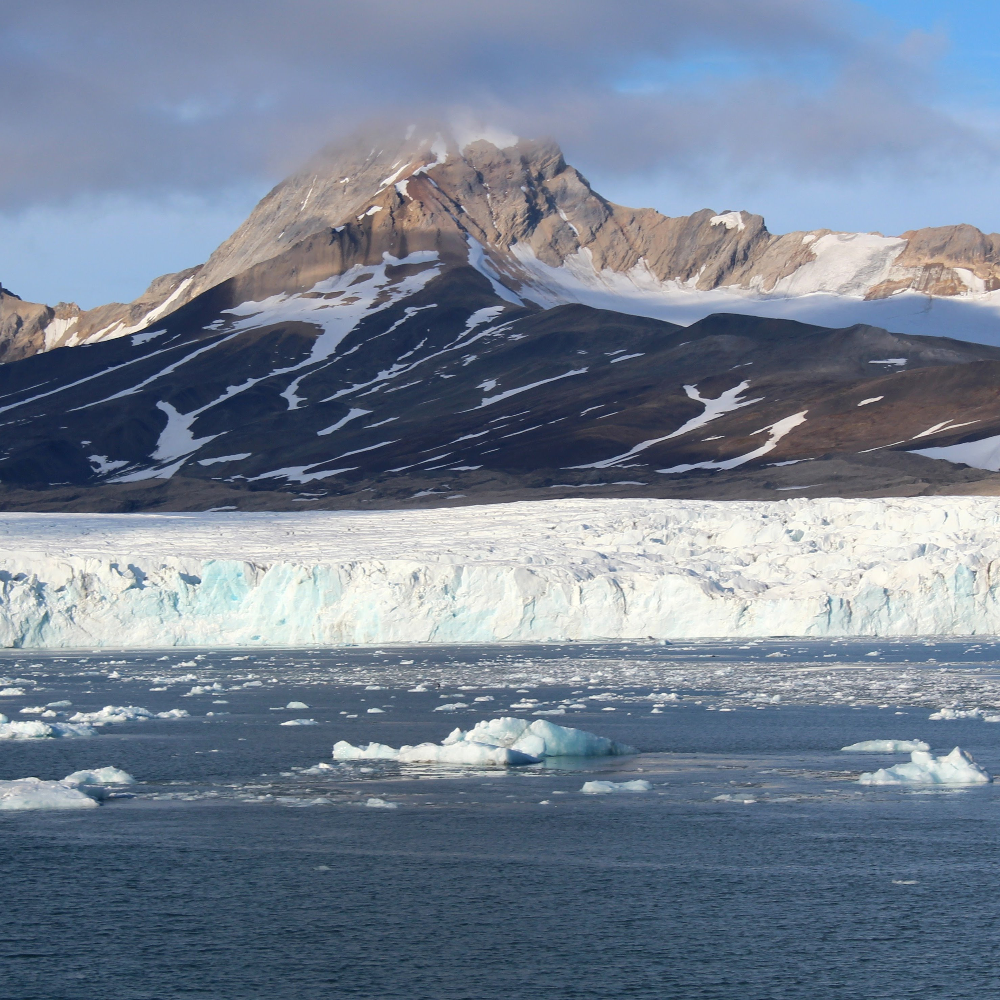

Research
My key research interests are contemporary processes on rock coasts, reconstructing long-term rock coast evolution and Arctic coastal dynamics. Contemporary processes on rock coasts Reconstructing long-term rock coast evolution Arctic coastal dynamics
Current projects:
 Cliff erosion along the Baltic rock coasts: observations, reconstructions, predictions (2024-2027)
Role: PI
Project details
Funding: National Science Centre of Poland (SONATA 19)
Cliff erosion along the Baltic rock coasts: observations, reconstructions, predictions (2024-2027)
Role: PI
Project details
Funding: National Science Centre of Poland (SONATA 19)
Long-term coastal cliff retreat rates from cosmogenic 10Be concentrations (2024-2025)
Role: PI with Vincent Regard, Géosciences Environnement Toulouse
Funding: Polish Academy of Sciences - French National Centre for Scientific Research (CNRS) International Emerging Actions (Bilateral Grant)
Wave energy delivery to the shores of Hornsund fjord, Svalbard (2021-2024)
Role: PI
Project details
Funding: National Science Centre of Poland (SONATINA 5)
- Swirad et al., 2023 ESSD
- Swirad et al., 2024 The Cryosphere
Bilateral initiative aiming at harmonisation of the Svalbard cooperation (HarSval) (2024-2025)
Role: Researcher
PI: Dr Dariusz Ignatiuk, University of Silesia
Funding: EEA and Norway Grants

FROST: Fibre-optic sensing towards the improvement of environmental monitoring in Svalbard (2023-2025)
Role: Researcher
PI: Dr Wojciech Gajek, Institute of Geophysics, Polish Academy of Sciences, Poland
Funding: SIOS - Svalbard Integrated Arctic Earth Observing System (Optimisation Call)
Past projects:
Q-MESA - Mechanisms of Evolution of Sandstone Areas, Central and Western Europe (2021-2024)
Role: Researcher
PI: Dr Filip Duszyński, University of Wroclaw, Poland
Funding: National Science Centre of Poland (SONATA 16)
 High-resolution imagery for mapping nearshore sea ice (LARGESSE) (2023-2024)
Role: PI
Funding: SIOS - Svalbard Integrated Arctic Earth Observing System (SIOS-Planet Access Call)
High-resolution imagery for mapping nearshore sea ice (LARGESSE) (2023-2024)
Role: PI
Funding: SIOS - Svalbard Integrated Arctic Earth Observing System (SIOS-Planet Access Call)
 State-wide assessment of California coastal cliff erosion and retreat (2020-2022)
Role: Post-doc
PI: Dr Adam Young, Scripps Institution of Oceanography, USA
Funding: California Ocean Protection Council
- Young et al., 2021 Geomorph.
- Swirad and Young, 2021 Geomorph.
- Swirad and Young, 2022 GMD
- Swirad and Young, 2022 Geomorph.
State-wide assessment of California coastal cliff erosion and retreat (2020-2022)
Role: Post-doc
PI: Dr Adam Young, Scripps Institution of Oceanography, USA
Funding: California Ocean Protection Council
- Young et al., 2021 Geomorph.
- Swirad and Young, 2021 Geomorph.
- Swirad and Young, 2022 GMD
- Swirad and Young, 2022 Geomorph.
 Earthquake-triggered landsliding in Nepal during and post monsoon (2019-2020)
Role: Post-doc
PI: Prof. Nick Rosser, Durham University, UK
Funding: UK Department for International Development
- Kincey et al., 2021 JGR: Earth Surf.
- Kincey et al., 2023 ESPL
- Kincey et al., 2024 Earth's Future
Earthquake-triggered landsliding in Nepal during and post monsoon (2019-2020)
Role: Post-doc
PI: Prof. Nick Rosser, Durham University, UK
Funding: UK Department for International Development
- Kincey et al., 2021 JGR: Earth Surf.
- Kincey et al., 2023 ESPL
- Kincey et al., 2024 Earth's Future

COastal Behaviour and Rates of Activity (COBRA) (2014-2018)
Role: PhD Student
PI: Prof. Nick Rosser, Durham University, UK
Funding: ICL Fertilizers UK
- Swirad et al., 2016 JCR
- Swirad et al., 2019 ESPL
- Swirad et al., 2020 Nat. Comms

POROCO - Mechanisms controlling the evolution and geomorphology of rock coasts in polar climates (2015-2018)
Role: Researcher
PI: Dr Matt Strzelecki, University of Wroclaw, Poland
Funding: National Science Centre of Poland (OPUS 6)
- Swirad and Rees, 2015 IJGIS
- Strzelecki et al., 2017 STOTEN
- Swirad et al., 2017 ZfG
- Lim et al., 2020 Remote Sens. Environ.
Mapping the northern plains of Mars: origins, evolution and response to the climate change (2013-2015)
Role: Young Researcher
PI: Dr Matt Balme, Open University, UK
Funding: International Space Science Institute, Bern, Switzerland
- Ramsdale et al., 2017 Planet. Space Sci.
- Séjourné et al., 2019 JGR: Planets
- Ramsdale et al., 2019 JGR: Planets
- Orgel et al., 2019 JGR: Planets